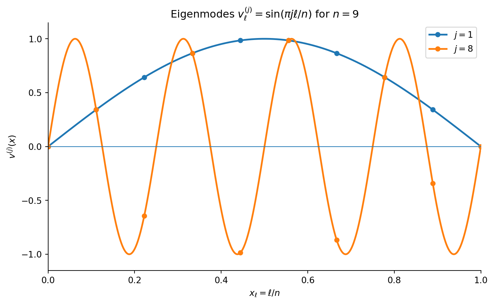

Demystifying Multigrid (Part 1)
Numerical Linear Algebra
Numerical PDEs
Multigrid Methods
Numerical Methods
Multigrid methods can be some of the more confusing numerical linear algebra techniques. In Part 1, we develop the key intuition: relaxation quickly removes oscillatory error but struggles with smooth error.
This will be the first blog post in a two-part introduction to multigrid. For those of you who are new to numerical linear algebra, you are certainly welcome to read as I have designed these posts for those who are unfamiliar with numerical methods entirely! However, you may have a greater appreciation for what is being discussed if you are at least familiar with Jacobi/Gauss-Seidel iteration. The only “hard” prerequisites are an understanding of linear algebra (specifically eigenvalue problems and bases) and calculus.
Motivation
While multigrid is considered a numerical linear algebra technique, it was originally developed for finding numerical solutions of PDEs. So, we will use a boundary value problem (BVP) to help us understand how multigrid works, why it’s so helpful, and how it can be generalized.
Suppose we want to find the numerical solution to the following BVP:
\begin{equation} \begin{split} -\Delta u(\mathbf{x}) + a(\mathbf{x})u(\mathbf{x}) = 0,\qquad &\text{in }\Omega\\ u(\mathbf{x}) = g(\mathbf{x}),\qquad &\text{on }\partial\Omega, \end{split} \end{equation}
where \Omega denotes the domain and \partial\Omega denotes its boundary. The specifics of the PDE aren’t too important, but it is noteworthy that this is an elliptic PDE.
Definition 1 (Elliptic PDE) where the coefficients A,B,\ldots,G may be constants or functions of x and y. This PDE is called elliptic at a point (x,y) if
B(x,y)^2-A(x,y)C(x,y)<0.
It is elliptic on \Omega if this condition holds at every point in \Omega.
As it turns out, we don’t call this an elliptic PDE for no reason. As a fun side exercise, maybe try to figure out why this family of PDEs may be called “elliptic” :). However, I don’t want to get too far off track here. The reason I want to distinguish this family of PDEs is because this was the family of PDEs for which multigrid was originally designed.
This all sounds well and good… but how does this relate to numerical linear algebra? Well, for PDEs such as this, we can easily discretize them into a linear system: \begin{equation} \mathbf{Au} = \mathbf{f}. \end{equation}
For the purposes of this post, I will just tell you that we can discretize PDEs using finite difference methods. I will perhaps explain in a future post how and why these help with discretizing PDEs, but, for now, I will just give you the central difference method for second derivatives: f''(x_i)\approx \frac{f(x_{i+1}) - 2f(x_i) + f(x_{i-1})}{h^2},
where x_i is the point we want to evaluate the derivative at, and h is the size of the steps between x points. So how does this help us represent a BVP as a linear system? Let’s look at an example.
Example (1D Poisson)
\begin{split} -u''(x) = f(x),\qquad 0<x<1\\ u(0) = u(1) = 0. \end{split}
Let’s say we want to find an approximation v to u. We can represent the approximation v as a vector \mathbf{v} where the i-th element is v(x_i), and we do the same for f by representing it as a vector \mathbf{f}. Then, using the central difference method, we can express the BVP as:
\frac{1}{h^2}\begin{bmatrix} 2 & -1 & & & & \\ -1 & 2 & -1& & & \\ & -1 & 2 & -1 & & \\ & & \ddots & \ddots & \ddots & \\ & & & \ddots & \ddots & -1\\ & & & & -1 & 2\\ \end{bmatrix}\mathbf{v} = \mathbf{f},
For later discussions, we will define:
\mathbf{T} = \begin{bmatrix} 2 & -1 & & & & \\ -1 & 2 & -1& & & \\ & -1 & 2 & -1 & & \\ & & \ddots & \ddots & \ddots & \\ & & & \ddots & \ddots & -1\\ & & & & -1 & 2\\ \end{bmatrix},\qquad \mathbf{A}_h = \frac{1}{h^2}\mathbf{T}.
Approximating Solutions
In numerical linear algebra, we have two key quantities for characterizing the accuracy of an approximate solution \mathbf{v} to the true solution \mathbf{u}.
Definition 2 (Error) The error is defined as \mathbf{e} = \mathbf{u}-\mathbf{v}.
Definition 3 (Residual) The residual is defined as \mathbf{r} = \mathbf{f} - \mathbf{A}\mathbf{v}.
As it turns out, the error and residual are directly related: \mathbf{Ae} =\mathbf{A}(\mathbf{u} - \mathbf{v}) = \underbrace{\mathbf{Au}}_{=\mathbf{f} \text{ by (2)}} - \mathbf{Av} = \mathbf{f} - \mathbf{Av} = \mathbf{r}.
But how can we actually obtain an approximation \mathbf{v}? A common approach is to use an iterative method. Much time in a numerical linear algebra class is spent discussing these, and so we will not go into too much detail here. However, I do want to discuss one iterative scheme, the weighted Jacobi method (WJM).
Definition 4 (Weighted Jacobi Method) For solving the linear system given in (2), we can utilize the following iterative update called the weighted Jacobi method to obtain an approximation to the solution \mathbf{u}:
\mathbf{u}^k = ((1-\omega)\mathbf{I} + \omega\mathbf{D}^{-1}(\mathbf{E}+\mathbf{F}))\mathbf{u}^{k-1} + \omega\mathbf{D}^{-1}\mathbf{f},
where \omega \in [0,1], \mathbf{D} = \text{diag}(\mathbf{A}), and -\mathbf{E} and -\mathbf{F} are the strict lower and strict upper parts of \mathbf{A} respectively.
Similarly, the exact solution applied to the WJM update gives us:
\mathbf{u} = ((1-\omega)\mathbf{I} + \omega\mathbf{D}^{-1}(\mathbf{E}+\mathbf{F}))\mathbf{u} + \omega\mathbf{D}^{-1}\mathbf{f},
So, if we take the difference of the true solution and our update (which is our approximation), we can write the error at step k as:
\mathbf{e}^k = ((1-\omega)\mathbf{I} + \omega\mathbf{D}^{-1}(\mathbf{E}+\mathbf{F}))\mathbf{e}^{k-1}\equiv \mathbf{G}\mathbf{e}^{k-1}.
Alternatively, if we have initial error \mathbf{e}^0, after k iterations, we can write this as:
\begin{equation} \mathbf{e}^k = \mathbf{G}^k\mathbf{e}^0. \end{equation}
To emphasize, in the abstract, \mathbf{G} can represent the error-propagation matrix of any stationary linear iterative method, I am simply choosing it to represent WJM for the purposes of later discussions. If the structure of the update doesn’t seem intuitive to you do not worry, for the purposes of this post’s story, just try to have a grasp on what each component of the update scheme represents.
Smoothing Effects
Now, suppose \{\lambda_j, \boldsymbol{\varphi}_j\}_{j=1}^m are eigenpairs of \mathbf{G}\in\mathbb{R}^{m\times m}. Let’s also assume that \mathbf{G} is diagonalizable. Then, we know that the eigenvectors of \mathbf{G} form a basis for \mathbb{R}^m. Then we can represent any vector in \mathbb{R}^m in terms of a linear combination of the eigenvectors of \mathbf{G}. Since \mathbf{e}^0\in\mathbb{R}^m, for some coefficients \alpha_j \in \mathbb{R}, we have:
\mathbf{e}^0 = \sum_{j=1}^m \alpha_j\boldsymbol{\varphi}_j.
Plugging this into (3), we have:
\mathbf{e}^k = \mathbf{G}^k \sum_{j=1}^m \alpha_j\boldsymbol{\varphi}_j.
The eigenproblem \mathbf{G}\boldsymbol{\varphi}_j = \lambda_j \boldsymbol{\varphi}_j can be used to show, by induction, that \mathbf{G}^k\boldsymbol{\varphi}_j = \lambda_j^k \boldsymbol{\varphi}_j. Thus, we have:
\mathbf{e}^k = \sum_{j=1}^m \alpha_j (\lambda_j)^k \boldsymbol{\varphi}_j.
So how do the eigenvalues affect how quickly different components are damped? If |\lambda_j|\ll 1, the j-th component is damped very quickly. If |\lambda_j|\approx 1, the component is reduced very slowly. If |\lambda_j|>1, the component instead grows.
At this abstract level, we should refer to these as rapidly damped and slowly damped components. Whether they correspond to high- or low-frequency modes depends on the spatial behavior of the associated eigenvectors. We will see this relationship explicitly for the one-dimensional Poisson problem.
Example (Return to 1D Poisson Equation)
We will return to the discretization we discussed earlier. We can represent the eigenvalue problem of this discretization as:
\mathbf{T}\mathbf{v} = \mu\mathbf{v}.
(Optional) Derivation of Eigenvalues and Eigenvectors for 1D Poisson
If you do not want to see the derivation of the eigenvectors/eigenvalues of this BC, you can skip this section. Though, I recommend you read through it as it provides insight into the trigonometric nature of the spectrum of this problem.
For the i-th component, we have:
-v_{i-1} + 2v_i - v_{i+1} = \mu v_i.
Using the methods of constant coefficients, we can guess that v_i = r^i for some r, then we have:
-r^{i-1} + 2r^i -r^{i+1} = \mu r^i
\Rightarrow r^2 - (2-\mu)r + 1 = 0
So, we have guesses r_1 and r_2. Then, for a particular v_\ell, we have:
v_\ell = \alpha r_1^\ell + \beta r_2^\ell.
Next, we can use the boundary conditions. Plugging these both in leads to solving a system of equations (which I will leave as an exercise to the reader), but the end result gives us:
\left(\frac{r_1}{r_2} \right)^n = 1.
We divide [0,1] into n subintervals, so h=\frac{1}{n}. Because two boundary values are prescribed the discrete solution has n-1 unknown components. This means that the ratio r_1/r_2 is an n-th root of unity:
\frac{r_1}{r_2} = e^{\frac{2\pi ij}{n}},\quad j =1,2,\cdots, n-1.
Again, since r_1,r_2 are both roots of the original quadratic equation, we know that:
(r-r_1)(r-r_2) = 0
\Rightarrow r^2 - (r_1 + r_2)r + r_1r_2 =0.
Thus, going back to our original expression for the quadratic equation, means that we must have:
\begin{split} r_1+r_2 = 2-\mu\\ r_1r_2 =1\quad \Rightarrow r_1 = \frac{1}{r_2}. \end{split}
Because r_1/r_2 has unit magnitude and r_1r_2=1, both roots have unit magnitude. Thus, up to swapping the roots, we may write
r_1=e^{\mathrm{i}\theta}, \qquad r_2=e^{-\mathrm{i}\theta}.
The boundary condition gives
\left(\frac{r_1}{r_2}\right)^n = e^{2\mathrm{i}n\theta} = 1.
Therefore,
\theta=\frac{\pi j}{n}, \qquad j=1,2,\ldots,n-1,
and hence
r_1=e^{\pi\mathrm{i}j/n}, \qquad r_2=e^{-\pi\mathrm{i}j/n}.
Then, by the first equation, we have:
\mu_j = 2 - (r_1+r_2) = 2 - \left(e^{\frac{\pi ij}{n}} + e^{-\frac{\pi ij}{n}}\right).
Now, recall that we can define cosine in terms of exponentials \cos(x) = \frac{e^{ix} + e^{-ix}}{2}. Thus, we can further simplify our j-th eigenvalue:
\mu_j = 2 - 2\cos\left(\frac{\pi j}{n}\right),
= 2\left(1 - \cos\left(\frac{\pi j}{2n} + \frac{\pi j}{2n} \right)\right).
Using the double angle formula, we get:
= 2\left(1 - \cos^2\left(\frac{\pi j}{2n}\right) + \sin^2\left(\frac{\pi j}{2n}\right)\right).
Using \cos^2x + \sin^2x = 1:
= 4\sin^2 \frac{\pi j}{2n},\quad j=1,2,\cdots, n-1,
hence, we have the eigenvalues. For the j-th eigenvector, we recall that:
v_\ell^{(j)} = -r_1^\ell + r_2^\ell = -e^{\frac{\pi ij\ell}{n}} + e^{-\frac{\pi ij\ell}{n}} = -2i\sin\left(\frac{\pi j \ell}{n} \right).
Finally, since eigenvectors/eigenfunctions can be scaled by any non-zero constant, we can obtain the corresponding grid mode, including its prescribed boundary values:
\begin{bmatrix} v_0^{(j)}\\ v_1^{(j)}\\ \vdots\\ v_{n-1}^{(j)}\\ v_n^{(j)} \end{bmatrix} = \begin{bmatrix} \sin\frac{\pi j(0)}{n}\\ \sin\frac{\pi j(1)}{n}\\ \vdots\\ \sin\frac{\pi j(n-1)}{n}\\ \sin\frac{\pi j(n)}{n} \end{bmatrix} = \begin{bmatrix} 0\\ \sin\frac{\pi j}{n}\\ \vdots\\ \sin\frac{\pi j(n-1)}{n}\\ 0 \end{bmatrix}.
Since the boundary values are prescribed, we write the eigenvector in n-1 dimensions as:
\mathbf{v}^{(j)} = \begin{bmatrix} \sin\frac{\pi j}{n}\\ \sin\frac{2\pi j}{n}\\ \vdots\\ \sin\frac{\pi j(n-1)}{n} \end{bmatrix}\in\mathbb{R}^{n-1}
PHEW!
Behavior of Iteration on Different Frequencies
We briefly mentioned low vs. high-frequency components in the previous section. However, I would like now to provide a more specific definition for this specific problem. Recall the eigenvalues for this problem are given as:
\mu_j = 4\sin^2 \frac{\pi j}{2n},\quad j=1,2,\cdots, n-1.
We can see that the eigenvalues of \mu_j increase with j. However, the frequency of mode j is determined by the behavior of its eigenvector. As we can see in the figure below, a smaller value for j will vary much less across the grid than a higher one. Hence, we call the former a low-frequency mode and the latter a high-frequency mode.
Analysis of Weighted Jacobi Method on Different Frequencies
So we can visualize the high-frequency and low-frequency modes of the discretization matrix, but how can we see how these different modes converge for the weighted Jacobi iteration. For this discretization,
\mathbf{D}_h = \operatorname{diag}(\mathbf{A}_h) = \frac{2}{h^2}\mathbf{I}. First, we can rewrite the weighted Jacobi iteration matrix as the following:
\mathbf{G} = (1-\omega)\mathbf{I} + \omega \mathbf{D}^{-1}(\mathbf{E}+\mathbf{F})
=(1-\omega)\mathbf{I} + \omega \mathbf{D}_h^{-1}(\mathbf{D}_h-\mathbf{A}_h)
=(1-\omega)\mathbf{I} + \omega\mathbf{I} - \omega\mathbf{D_h}^{-1}\mathbf{A}_h
=\mathbf{I} -\omega\mathbf{D}_h^{-1}\mathbf{A}_h
=\mathbf{I} - \omega \left(\frac{h^2}{2}\mathbf{I}\right)\left(\frac{1}{h^2}\mathbf{T}\right)
=\mathbf{I} - \frac{\omega}{2}\mathbf{T}.
Now, from our derivation of the eigenvalues of \mathbf{T}, we can easily translate those to the eigenvalues of \mathbf{G}, which are 1 - \frac{\omega}{2}\left(4\sin^2 \frac{\pi j}{2n}\right) = 1 - 2\omega \sin^2\frac{\pi j}{2n} for j=1,2,\cdots, n-1.
Let us consider the case where \omega=\frac{2}{3}, then, the eigenvalues become:
\gamma_j = 1 - \frac{4}{3}\sin^2 \frac{\pi j}{2n}.
For j=n-1,
\begin{aligned} \gamma_{n-1} &= 1-\frac{4}{3} \sin^2\left(\frac{\pi(n-1)}{2n}\right)\\ &= 1-\frac{4}{3} \cos^2\left(\frac{\pi h}{2}\right)\\ &= -\frac{1}{3} +\frac{4}{3} \sin^2\left(\frac{\pi h}{2}\right)\\ &= -\frac{1}{3} +\frac{\pi^2h^2}{3} +\mathcal{O}(h^4). \end{aligned}
Thus, |\gamma_{n-1}|\approx 1/3, so this oscillatory mode is rapidly damped. Its sign alternates between iterations because \gamma_{n-1}<0 for n\geq 4.
For j=1,
\begin{aligned} \gamma_1 &= 1-\frac{4}{3} \sin^2\left(\frac{\pi h}{2}\right)\\ &= 1-\frac{\pi^2h^2}{3} +\mathcal{O}(h^4)\\ &\approx 1. \end{aligned}
Therefore, the smooth mode is reduced very slowly.
Takeaway
In this post, we gave a primer on the motivation for multigrid methods. For weighted Jacobi applied to this discretized elliptic problem, the high-frequency error components are rapidly damped, while the low-frequency components decay slowly. This motivates a method for handling these low-frequency modes, which we will discuss in the next post. Sorry for the cliffhanger :).
Citation
BibTeX citation:
@online{benanti2026,
author = {Benanti, Alex},
title = {Demystifying {Multigrid} {(Part} 1)},
date = {2026-07-28},
url = {https://alexbenanti.github.io/Alex-Talks-Scientific-Computing-Machine-Learning/posts/2026-07-26-demystifying-multigrid/},
langid = {en}
}
For attribution, please cite this work as:
Benanti, Alex. 2026. “Demystifying Multigrid (Part 1).”
July 28. https://alexbenanti.github.io/Alex-Talks-Scientific-Computing-Machine-Learning/posts/2026-07-26-demystifying-multigrid/.